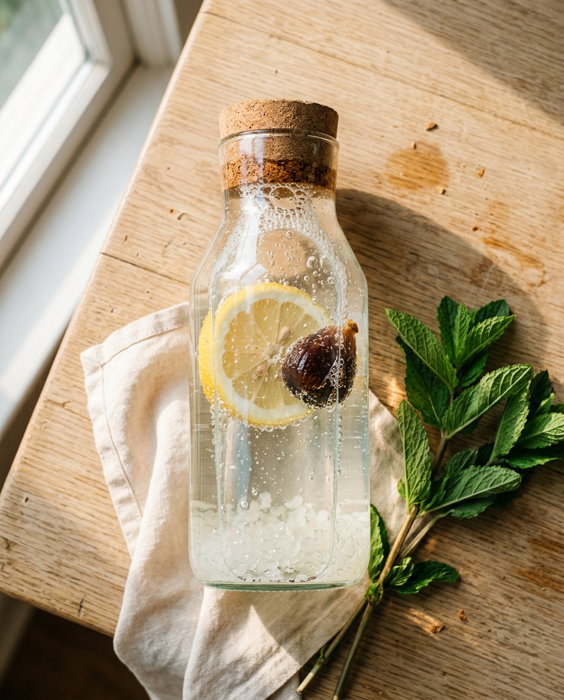
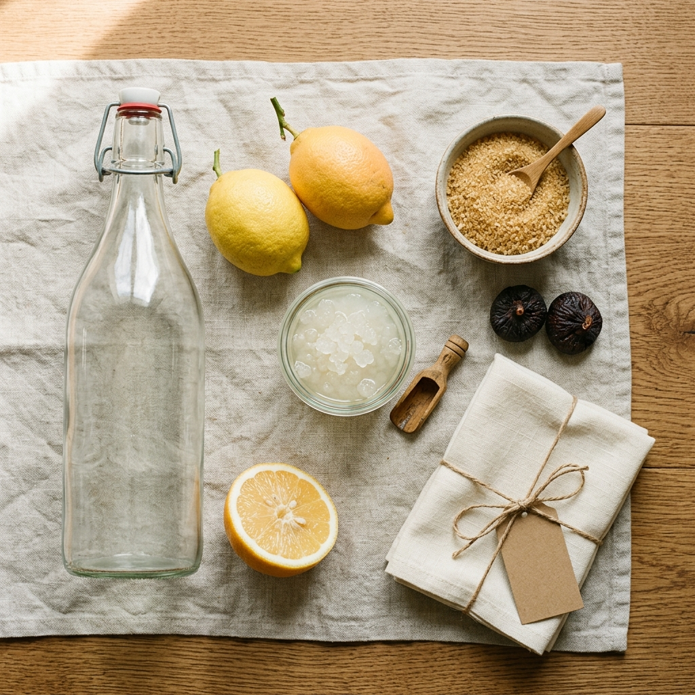

Mach deine
eigene Sommer-
Limo.
30 Gramm lebendige Wasserkefir-Kristalle. Zwei Tage Geduld. Eine Limonade, die jedes Mal anders schmeckt — weil du sie selbst bestimmst.

Was du da
eigentlich züchtest.
Wasserkefir-Kristalle — auch Tibicos, Japankristalle oder einfach „die kleinen Glasperlen" — sind eine lebendige Symbiose aus Hefen und Milchsäurebakterien. Sie fressen Zucker und atmen Kohlensäure. Das ist alles. Den Rest machst du.
Wir behaupten nichts über Heilwirkungen. Wikipedia schreibt dazu: „Heilwirkungen werden noch erforscht." Wir mögen das Getränk einfach.
In drei Schritten zur
eigenen Sommer-Limo.
Ansetzen
1 L Wasser, 60 g Zucker, deine 30 g Kristalle in ein sauberes Bügelglas geben. Optional: eine Zitronenscheibe und eine Trockenfeige.
Warten
24 – 48 Stunden bei Raumtemperatur stehen lassen. Tuch drüber, kein Deckel. Du siehst Bläschen aufsteigen — das ist Leben.
Abfüllen
Durch ein Sieb in Flaschen. Kühl stellen, nach 12 h öffnen. Es zischt. Du grinst. Die Kristalle wandern in die nächste Charge.
Vier Limos. Eine Kultur.
Die Zweitfermentation entscheidet über den Charakter. Wenig Aufwand, große Wirkung. Probier dich durch den Sommer.
Zitrone & Ingwer
Klassisch, klar, leicht scharf.Trockenfeige
Warm, karamellig, fast Wein.Beeren-Mix
Tiefrot, fruchtig, Sommerabend.Pur & Minze
Klar, kühl, Glas-Wasser+.Was du brauchst.
Das meiste hast du schon.

Wir machen den ersten
Schritt günstiger.
Bis 31. Juli bekommst du die 30-g-Charge mit 20 % Rabatt. Eingeben beim Bezahlen — fertig.
Drei Dinge, die fast
jeder fragt.
Was, wenn ich mal eine Charge vergesse?
Die Kristalle sind robust. Im Kühlschrank in Zuckerwasser halten sie problemlos zwei bis drei Wochen. Danach einfach neu ansetzen — sie wachen wieder auf.
Ist das was für Kinder?
Bei aerober Fermentation (24 h, Tuch über dem Glas) liegt der Alkoholgehalt im Bereich 0,2 % — vergleichbar mit reifem Apfelsaft. Du entscheidest, was du der Familie gibst.
Brauche ich Bio-Zucker?
Nicht zwingend. Die Kristalle leben von Saccharose. Roher Rohrzucker liefert mehr Mineralien — schmeckt deshalb runder. Süßstoffe oder Honig: nein, die Kultur stirbt.
Zwei Tage. Ein Glas.
Dann ist der Sommer
einfach besser.
30 g lebendige Wasserkefir-Kristalle. Anleitung dabei. Versand morgen. Bis 31. Juli mit Code SOMMERKEFIR25 für 15,12 €.
Versand 24 h · Kostenlos ab 42,90 € · 30 Tage Rückgaberecht · Bio-Zertifizierung DE-ÖKO-006